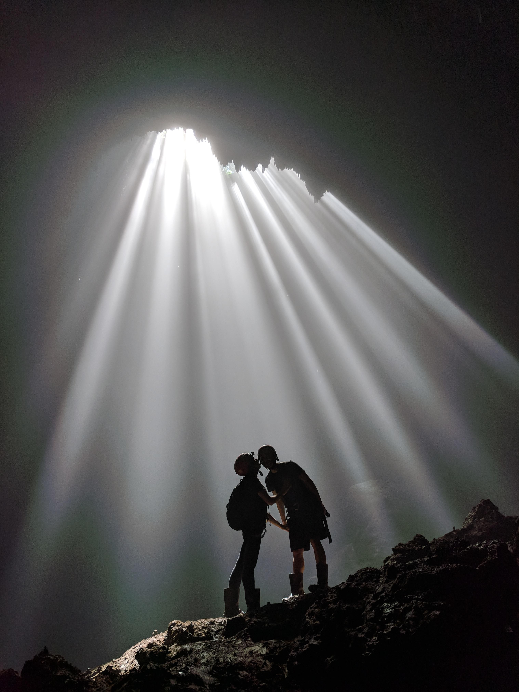

Goa Jomblang
Siapa yang sudah pernah mendengar wisata Goa Jomblang yang berada di kawasan Gunungkidul, Yogyakarta ini. Salah satu goa yang memiliki keindahan tersendiri ini, menjadi salah satu goa terfavorit yang banyak sekali dikunjungi oleh wisatawan apalagi di kala libur tiba. Goa yang termasuk ke dalam destinasi wisata memacu adrenalin ini ternyata juga bisa memanjakan mata pengunjungnya dan membuat pengunjung takjub ketika sudah berada di dalamnya. Goa Jomblang menjadi salah satu dari 500 goa yang belum terjamah di kawasan bukit karst Gunungkidul, Yogyakarta. Goa vertikal dengan hutan purba yang berada rapat pada dasarnya menjadi daya tarik dari goa ini. Lokasi goa yang kerap dijadikan sebgaia tempat carving oleh para wisatawan ini termasuk cukup menantang terutama bagi Anda yang baru pertama kali melakukannya. Tenang saja, bagi Anda yang belum terbiasa melakukan carving maka akan dipandu oleh tenaga profesional yang siap sedia menemani Anda carving menyusuri goa ini. Mendengar namanya saja, sepertinya ada dari Anda yang sudah mengetahui mengenai keunikan dari goa yang satu ini. Daya tarik dari goa ini sendiri adalah letaknya yang berada di pelosok dengan dikerumuni oleh tandusnya karst di kawasan Gunungkidul. Uniknya lagi, Anda bisa mengabadikan foto dengan cahaya surga yang turun tegak lurus menembus ke dalam goa. Sungguh pemandangan inilah yang menjadikan goa ini banyak dikunjungi oleh para wisatawan dalam maupun luar negeri.
Bagi Anda yang penasaran dengan pemandangan di dalam goa yang satu ini. Pemandangan sungai bawah tanah yang ada di dalam goa mengalir dengan begitu derasnya. Selain itu, sinar matahari yang membentuk menyerupai tiang akan menjadi pemandangan menarik yang bisa Anda dapati di dalam goa. Air yang menetes dari langit-langit goa juga menjadi penambah kesan eksotis dari goa fenomenal ini. Semua keindahan yang ada di dalam goa ini akan membuat pengalaman berlibur Anda sangat-sangat mengesankan dan tak terlupakan. Beberapa hal yang biasa dilakukan oleh wisatawan ketika berkunjung ke goa ini adalah melakukan olahraga carving yang cukup memacu adrenalin. Anda akan bergelantungan dan menuju turun ke dalam goa hanya dengan mengandalkan seutas tali saja. Untuk dapat melakukan olahraga carving ini Anda bisa mempelajari tekniknya terlebih dahulu. Akan tetapi, jika Anda belum terbiasa maka akan ada pemandu yang menemani Anda masuk ke dalam goa dengan menggunakan teknik carving. Setelah masuk ke dalam goa, berfoto menjadi hal yang harus dilakukan oleh para wisatawan untuk mengabadikan momen indah selama berada di dalam goa. Alamat lokasi ini berada di Jetis Wetan, Semanu, Gunungkidul atau sekitar 50 KM dari arah tenggara Yogyakarta. Rute perjalanan yang Anda tempuh untuk mencapai ke goa ini adalah Anda bisa menaiki bus rusan Jogja-Wonosari dan mencari angkutan umum menuju ke Kecamatan Semanu dan turun di rumah Kepala Dukuh Jetis Wetan. Nantinya, barang-barang Anda akan dititipkan di sana sebelum masuk ke dalam goa. Setelah itu, Anda akan dibawa menyusuri perjalanan sejauh 15 meter untuk bisa tiba di goa.
Berikut sekilas suasana yang ada di Goa Jomblang
Source: Youtube